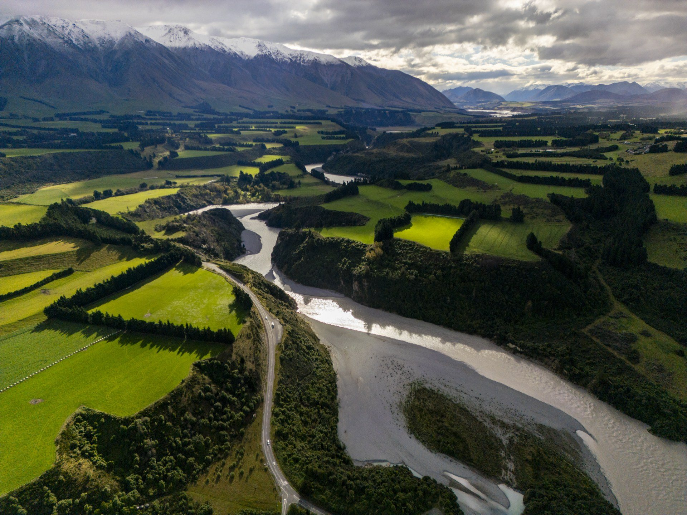
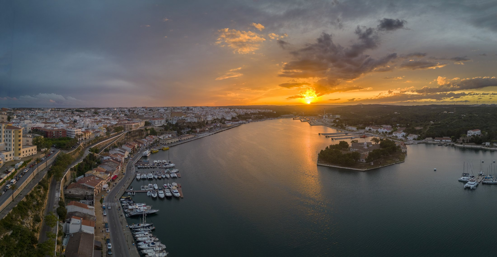
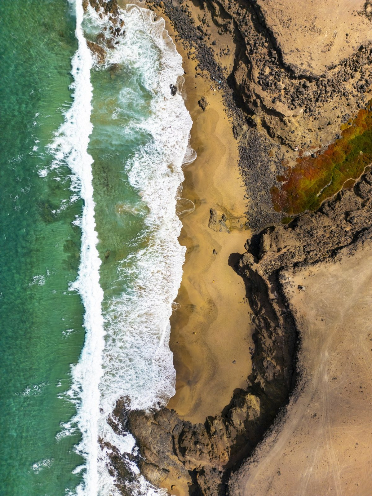
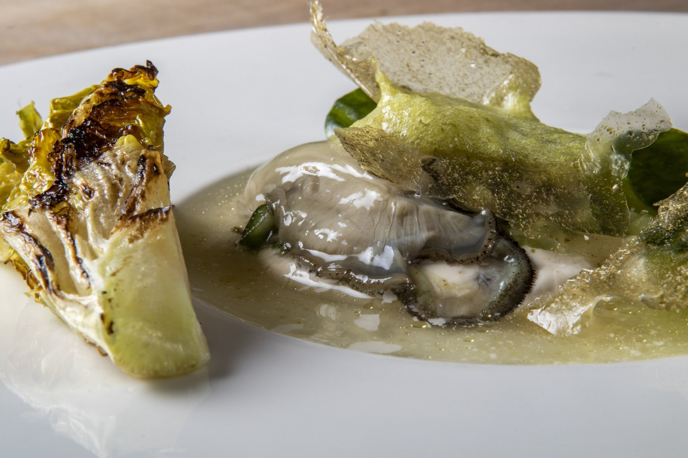

Reach new visitors
Introduce a range of destinations and experiences to Spanish audiences.

New photography and film to connect Spanish audiences with Danish places, people and experiences.
Explore the proposal ↘From coastal towns to food, design and everyday life, Denmark offers stories that can connect with new audiences.
I propose a new photography and film production in Denmark, developed with your team and local collaborators around the places and experiences you want to promote in Spain.
Your team can use the visual material to create its own campaigns, or work with us on the concept and production of a complete campaign.
Introduce a range of destinations and experiences to Spanish audiences.
Capture the people, food and details that give each place character.
Create material for your website, editorial, social channels and travel partners.
Explore potential stories. Your team chooses the audiences, partners and places to prioritise.
Follow a local perspective through architecture, neighbourhoods, culture and the everyday experiences that make a city memorable.
STORY ELEMENTSDESIGN · CULTURE · LOCAL LIFE
These are creative suggestions, not published VisitDenmark briefs.
These images are from my existing portfolio, showing my approach to place, food and atmosphere. They are not presented as photographs taken in Denmark.



A flexible production, from fresh visual material to a complete campaign.
New material produced in Denmark for destination marketing, websites, editorial and social channels.
We can shape the creative idea, production and final content with your team.
Local guides, producers, hosts and communities help tell stories rooted in place.
Production time, deliverables and usage are agreed according to the brief.
I’m Juan Aizpuru, a photographer and filmmaker focused on travel, people and experiences.
I work with a production team and collaborate with local professionals to create imagery that helps destinations and travel brands share their stories.
Explore my portfolio ↗I’d love to learn about your priorities and explore what we could create together in Denmark.
View Juan’s portfolio ↗